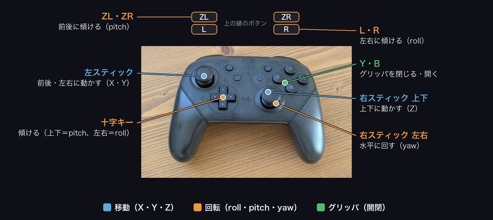
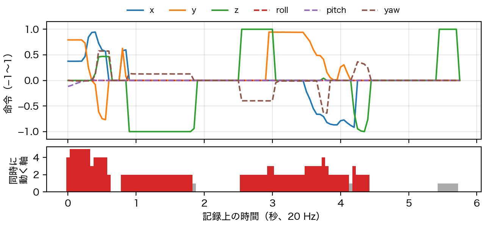
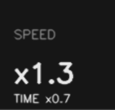
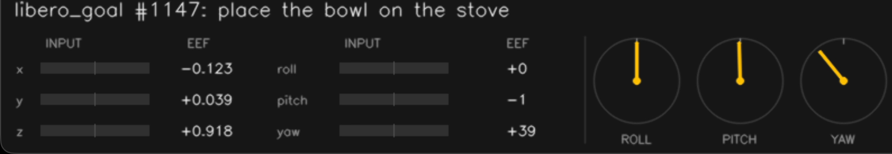
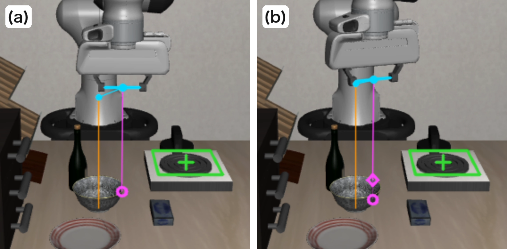

teleop は 2 つの倍率を独立に持つ（READY・PAUSE 中に R/L と ZR/ZL で調整）。 TIME は step を壁時計に対して何倍の速さで進めるかだけを決め、シミュレーションの制御周期（20 Hz）は変えない。 SPEED は action のスケールで、1 step あたりの EEF の変位を変える。 TIME < 1 で操作者はスローモーションで精密に操作でき、SPEED > 1 で少ない step 数でゴールに届く。
PAI 最終課題 説明資料
LIBERO のロボットをテレオペしてデモを集め、VLA を追加学習する
MacBook と Nintendo Switch Pro コントローラだけで動くテレオペ環境を、LIBERO [1] の摂動版である LIBERO-Plus [2]（物理エンジンは MuJoCo [3]、環境は robosuite [4]）上に Claude Code で実装し、収集したデモで SmolVLA [5] と π0.5 [6] を追加学習して、シミュレータで評価した。
action は OSC_POSE の Δ位置・Δ姿勢（6 自由度）とグリッパの 7 次元・20 Hz とし、VLA の action 空間とそろえた。 エピソードは MuJoCo の state 列と action 列で保存し、観測画像（agentview と eye-in-hand）は state から再描画して LeRobot [7] v3.0 形式に変換する。学習と評価の設定は 4 節にまとめた。 成功判定は BDDL のゴール述語の成立に加え、対象外の物体の変位（L1）が 1 mm 以下であることを条件とした。
数字は、動画で示したエピソード（libero_goal のタスク 1147「place the bowl on the stove」、116 step）の記録から算出した。
本リポジトリの teleop のキーボード入力は、キーを押すたびにほかの軸の入力を 0 にするため、1 step で動かせるのは 1 軸で、大きさも固定になる。 ゲームパッドでは 2 本のアナログスティックと肩ボタンに 6 軸を割り当て、倒し量をそのまま速度指令にした（図 1）。並進と回転を同時に、連続値で指令できる。
EEF が動いていた 79 step のうち 71 step（90%）で 2 軸以上、22 step（28%）で 3 軸以上、最大 5 軸を同時に指令していた（図 2）。 たとえば 10 step 目では並進 3 軸と yaw を同時に指令している（x 0.73、y −0.61、z 0.46、yaw 0.58）。 指令値は [−1, 1] の連続値（非ゼロの絶対値の中央値 0.47）で、VLA の出力と同じく連続的な action のデモが得られる。



teleop は 2 つの倍率を独立に持つ（READY・PAUSE 中に R/L と ZR/ZL で調整）。 TIME は step を壁時計に対して何倍の速さで進めるかだけを決め、シミュレーションの制御周期（20 Hz）は変えない。 SPEED は action のスケールで、1 step あたりの EEF の変位を変える。 TIME < 1 で操作者はスローモーションで精密に操作でき、SPEED > 1 で少ない step 数でゴールに届く。
動画のエピソードは TIME 0.7・SPEED 1.3 で収集した。操作には壁時計で約 10 秒かかったが、記録は 116 step（20 Hz で 5.8 秒）になる。 方策は 20 Hz で動作するので、操作者の実時間より約 1.8 倍速い動作をデモにできる。
壁時計の時間は、画面録画の STEP 表示の進み方（約 11 step/s）から算出した。TIME 0.7 の設定値は 14 step/s だが、3 視点の描画がボトルネックになり下回った。
状態表示の 3 つのダイヤル（ROLL・PITCH・YAW）は、EEF の現在の姿勢を針で示す。上が 0° で、ゲームパッドの入力方向と針の振れる向きを一致させた。 左の INPUT のバーは action（指令）なので、指令と結果を分けて確認できる。 回転はカメラ画像からは読み取りにくく、数値よりも針のほうが即座に把握できる（図 4）。


単眼のカメラ画像では、EEF と物体の奥行き方向の位置関係が読み取りにくい。 teleop は各カメラ画像に、把持中心（grip site）から鉛直下向きの線を描き、支持面との交点に ○ を打つ。 途中に物体があれば、レイキャストで求めた上面との交点に ◇ を打ち、その下を薄くする（図 5 (b)）。 3D のゲームでキャラクタの真下に落とす影と同じ役割で、○ の位置が EEF の水平位置を机の上に写す。
対象物には、中心から EEF の高さまでの鉛直線と、そこから把持中心への水平線を描き、高さの差と水平方向のずれを分けて示す。 把持線は両指を結ぶ向きと開き幅を示し、yaw の合わせ込みにも使える。
いずれも描画時に画像へ重ねるだけで、MuJoCo の state と記録には入らない。 学習用の観測画像は記録した state から再描画するため、表示補助はデモの画像に写り込まない。
| モデル | デモと学習 | 評価 |
|---|---|---|
| SmolVLA [5] | 人のテレオペのデモ 18 エピソード（赤いマグを皿から戻すタスク、1,942 frame）。LoRA（r16）、1,000 step、batch 8、Colab の L4。 | 学習時と同じ初期状態・seed で 3 rollout。MuJoCo 2.3.7 では成功、MuJoCo 3.7.0 の 2 回は失敗（時間切れ 1、接触 1）。シミュレータの版で結果が変わり、汎化は未検証。 |
| π0.5 [6] | VLADrop [8] の π0.5 の軽量版（Drop9：言語モデル 18 層のうち 9 層を除去）を起点に、LIBERO のタスクを逆向きにした 8 タスクの人のテレオペ 91 本から作った 415 エピソードで、全パラメータを 600 step（batch 16、Colab の A100、約 22 分）。 | 逆向きのタスク 16 件（8 種 × 指示文 2 通り）、各 1 rollout。学習前 0/16 → 学習後 13/16（対象外の物体の変位が 1 mm 以下での成功は 8/16）。 |
値は、学習時の実行記録（実行時の引数と設定ファイル）、学習済みの checkpoint の config、学習コードの既定値から取った。
教師データと学習済みの重みは非公開。学習の手順は notebooks/ に Colab の notebook として収録した。
VLADrop 版はデータ以外を表 3 と同じ値にしてある。SmolVLA 版の既定値（2,000 step、lr 3×10−4、LeRobot 既定の LoRA の対象、256 px）は表 3 と異なるので、再現するときは表 3 の値に置き換える。
| 項目 | 設定 |
|---|---|
| 環境 | LIBERO-Plus [2]（commit 4976dc3）、MuJoCo 3.7.0、robosuite 1.4.0。コントローラ OSC_POSE、control_freq 20 Hz |
| action | 7 次元。ai = clip(0.35 · gi · 1.4 · SPEED · ui, −1, 1)（i = 1…6）、a7 = ±1（Y で閉 +1、B で開 −1）。u はスティックの倒し量（遊び d 以下を 0 とし、残りを [−1, 1] に引き直す）またはボタンの ±1 |
| 軸ごとの g・d | x・y：左スティック、g 1.5、d 0.20 ／ z：右スティック縦、g 2.0、d 0.10 ／ yaw：右スティック横、g 1.0、d 0.25 ／ roll：L・R、pitch：ZL・ZR（十字キーでも可）、g 1.0（ZR の pitch のみ 0.7） |
| 倍率 | SPEED（action の倍率、開始時 1.3）と TIME（壁時計に対する step の進み）。図 2〜5 のエピソードは SPEED 1.3、TIME 0.7 |
| 記録と変換 | 各 action の直前の MuJoCo state と action を保存。観測は state から再描画（agentview・eye-in-hand、180° 回転）。state は 8 次元（EEF 位置 3、軸角 3、指 2）。LeRobot v3.0、20 fps |
| 項目 | SmolVLA [5] | π0.5 [6]（VLADrop Drop9 [8]） |
|---|---|---|
| 初期重み | lerobot/smolvla_libero_plus @ 7bb70aa（VLM：SmolVLM2-500M-Video-Instruct） | s1ghhh/VLADrop_pi05_LIBERO-Plus_Drop9Block_GateProbe @ 5760f99 |
| 学習コード | LeRobot v0.6.0 の lerobot-train | VLADrop @ 782d3e5 の scripts/train_pytorch.py（設定 pi05_libero_plus、PyTorch 2.7.1） |
| 教師データ | 人のテレオペ 18 エピソード、1 タスク、1,942 frame（各 92〜177 step）。ゴール到達・変位 ≤ 1 mm・グリッパ開で開始、の記録だけを採用 | 8 タスクの人のテレオペ 91 本（すべてゴール到達・接触なし）。全体 91 本と、対象が 1 cm 持ち上がった時点で分けた前半・後半（各 81 本 × 指示文 2 通り）の計 415 エピソード、30,599 frame、指示文 36 通り |
| 画像 | 128 px → pad 付きで 512 px に拡大。拡張なし | 128 px → pad 付きで 224 px に拡大。拡張：crop 95%・回転 ±5°（手首カメラ以外）、明るさ 0.7〜1.3・コントラスト 0.6〜1.4・彩度 0.5〜1.5 |
| 学習する重み | LoRA（r 16、α 16）。対象は action expert と VLM の言語層の q_proj・v_proj、state・action の射影層。元の重みは凍結し、学習後にマージ | 全パラメータ（vision encoder を含む）。除去した LLM 層 7、10〜17 は forward で飛ばす |
| step × batch | 1,000 × 8（8,000 サンプル） | 600 × 16（9,600 サンプル、約 0.31 epoch） |
| 最適化 | AdamW（β 0.9 / 0.95、ε 10−8、weight decay 10−10）、勾配クリップ 10 | AdamW（同左）、勾配クリップ 1.0 |
| 学習率 | 線形 warmup 100 step で 1×10−4、cosine で 1,000 step 目に 1×10−5 | 線形 warmup 100 step で 5×10−5、cosine で 600 step 目に 5×10−6 |
| 精度・EMA | bf16 混合精度。EMA なし | bf16（埋め込みと layernorm は fp32）、gradient checkpointing。EMA は 0.999 を指定したが PyTorch 版では適用されない |
| action chunk | 50（action・state は 32 次元に pad） | 10（action は 32 次元に pad） |
| 正規化 | state・action を平均・標準偏差で（統計量は lerobot/libero_plus のもの） | state・action を分位点 q01・q99 で（統計量は初期重みに同梱のもの） |
| 言語の token 長 | 最大 48 | 最大 200 |
| seed | 42 | 42 |
| 計算資源 | Colab L4、676 秒 | Colab A100 40 GB、1,306 秒（定常 1.6 秒/step）、VRAM 最大 28,854 MiB |
| 最終 loss | 0.345 | 0.023 |
| 項目 | SmolVLA | π0.5 |
|---|---|---|
| タスク | libero_90 の LIVING_ROOM_SCENE5「put the red mug on the left plate」の逆。指示文 “take the red mug off the left plate and put it back on the table behind the other two mugs” | LIBERO の 8 タスクの逆（表 5）× 指示文 2 通り（学習時と同じ文、学習にない言い換え）＝ 16 件 |
| シミュレータ | MuJoCo 2.3.7・robosuite 1.4.0（Mac）、MuJoCo 3.7.0・robosuite 1.4.1（Mac と GPU サーバ） | LIBERO-Plus（commit 4976dc3）、MuJoCo 3.2.3、robosuite 1.4.1 |
| 初期状態・seed | INIT 0、seed 42 | INIT 0、env と numpy の seed 42。推論のノイズは seed なし |
| カメラ | agentview・eye-in-hand | agentview・eye-in-hand、256 px、180° 回転 |
| step | 最大 400（MuJoCo 2.3.7）、300（3.7.0） | 待機 10 step（action [0, …, 0, −1]）の後、最大 300 step |
| 推論 | chunk 50 のうち先頭 10 を実行して再計画、flow matching 10 step | chunk 10 のうち先頭 5 を実行して再計画、flow matching 10 step |
| 判定 | 成功：BDDL のゴール述語の成立（最初に成立した step で終了）。接触：BDDL の obj_of_interest 以外の自由物体の位置について、待機後の位置からの L1 変位（|Δx| + |Δy| + |Δz|）の最大値が、いずれかの step で 1 mm を超えたとき | |
| 指示文（学習時と同じ文） | 逆にした元のタスク | 同じ文 | 言い換え | |
|---|---|---|---|---|
| RT01 | take the black bowl off the stove and put it back on the table between the wine bottle and the plate | libero_goal | ○ | ○ |
| RT02 | take the black bowl off the plate and put it back on top of the wooden cabinet | libero_spatial | △ | △ |
| RT03 | take the white mug off the left plate and put it back on the table to the left of the red mug | libero_10 | × | △ |
| RT04 | take the chocolate pudding from the right of the plate and put it back on the table behind the plate | libero_10 | ○ | △ |
| RT05 | take the black bowl off the top of the cabinet and put it on the stove | libero_spatial | ○ | ○ |
| RT06 | take the cream cheese off the table and put it in the top drawer of the cabinet | libero_goal | ○ | △ |
| RT07 | take the yellow book off the top of the shelf and put it back on the table on the left | libero_90 | ○ | ○ |
| RT08 | take the ketchup and the tomato sauce out of the tray, then put the ketchup on the table behind the alphabet soup and the tomato sauce behind the butter | libero_90 | × | × |
学習データには各タスクの INIT 0 の記録が含まれ、評価の初期状態と重なる。
| 名称 | 用途 | 版・入手先 | ライセンス | 文献 |
|---|---|---|---|---|
| LIBERO | ベンチマーク | github.com/Lifelong-Robot-Learning/LIBERO | MIT（データセットは CC BY 4.0） | [1] |
| LIBERO-Plus | シミュレータのタスク | github.com/sylvestf/LIBERO-plus（commit 4976dc3） | 記載なし | [2] |
| MuJoCo | 物理エンジン | 3.7.0（teleop。評価の版は表 4） | Apache-2.0 | [3] |
| robosuite | ロボット環境 | 1.4.0（teleop。評価の版は表 4） | MIT | [4] |
| LeRobot | データ形式・学習 | 0.6.0 | Apache-2.0 | [7] |
| SmolVLA | VLA | lerobot/smolvla_libero_plus（Hugging Face） | Apache-2.0 | [5] |
| π0.5 / openpi | VLA | github.com/Physical-Intelligence/openpi | Apache-2.0。π0.5 は PaliGemma [9] が基で、その重みには Gemma Terms of Use が適用される | [6] |
| VLADrop（Drop9） | π0.5 の軽量版の重みと学習コード（追加学習の起点） | s1ghhh/VLADrop_pi05_LIBERO-Plus_Drop9Block_GateProbe（Hugging Face）、github.com/s1ghhh/VLADrop | コードは MIT、重みは Apache-2.0 | [8] |
| pygame / OpenCV | teleop の入力・表示 | 2.6.1 / 4.11.0 | LGPL-2.1 / Apache-2.0 | — |
| Claude Code | teleop 環境・動画の作成 | Anthropic | Anthropic の利用規約 | — |
| AivisSpeech | 動画のナレーション（声：まお） | Aivis Project | LGPL-3.0（声のモデルは Aivis Common Model License 1.0） | — |
| FFmpeg / Pillow / Pygments | 動画・図の作成 | 8.1.2 / 12.3.0 / 2.21.0 | LGPL-2.1+・GPL-2.0+ / MIT-CMU / BSD-2-Clause | — |
| Google Colab | 学習の GPU（A100・L4） | Google の利用規約 | — |
Nintendo Switch は任天堂の商標、MacBook は Apple Inc. の商標です。その他の会社名・製品名は各社の商標または登録商標です。